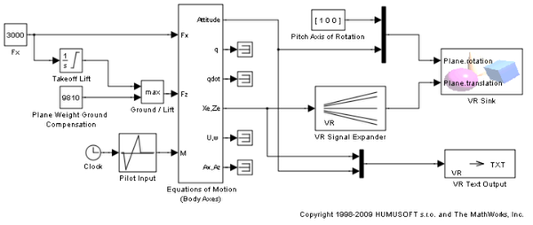
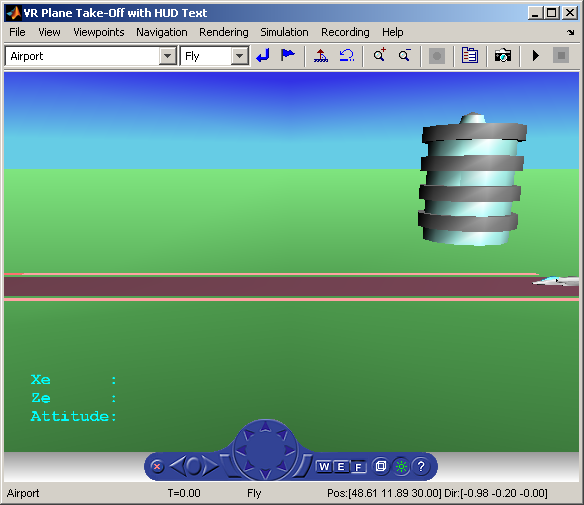

Plane Take-Off with HUD Text
This model is a variant of the vrtkoff example that shows also how to display signal values as text in the virtual scene and a simple Head-Up Display (HUD).
The text is sent to virtual scene using the VR Text Output block. This block formats the input vector using the format string defined in its mask (see sprintf() for more information) and resulting string is sent to the 'string' field of the associated VRML text node in the scene.
The HUD behavior (maintaining constant relative position between the user and the Text node) is achieved by defining a ProximitySensor that senses user position and orientation as it navigates through the scene and routing this information to the translation and rotation of HUD object - in this case a VRML Transform that contains the Text node.
 